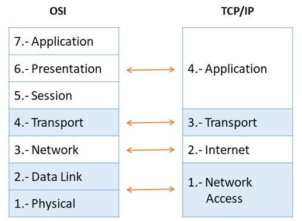

Redes e Internet
SUBTEL (Subsecretaría de Telecomunicaciones): es un organismo dependiente del Ministerio de Transportes y Telecomunicaciones. Su trabajo está orientado a coordinar, promover, fomentar y desarrollar las telecomunicaciones en Chile, transformando a este sector en motor para el desarrollo económico y social del país.
ISP: Internet Service Provider
Existen diversas formas de clasificar a los ISP, sin embargo, la tipificación comúnmente utilizada es “TIER”, la cual se relaciona directamente con la cobertura geográfica que abarca. El número de TIER que se le asigna a cada operador depende de la importancia en cobertura que presente en la red, comenzando con los operadores TIER 1 (aquellos de mayor cobertura) y descendiendo a medida que pierden relevancia en el ecosistema IP. Una tipificación alternativa clasifica a los ISP de acuerdo a la cantidad de redes IP que transporta. Independientemente de la clasificación, los operadores que ofrecen servicio de conectividad a otros ISP, típicamente se les denomina como Carriers, Mayoristas o Wholesale. A continuación, se detalla la clasificación considerando cada tipificación posible.
Tier 1
Son las redes de los grandes operadores globales (Global Carriers) que tienen tendidos de fibra óptica que abarcan al menos dos continentes. Desde una red TIER 1 se puede acceder a cualquier punto de Internet gracias a que es una condición necesaria para su clasificación que todos los operadores TIER 1 deben estar conectados entre sí. Se puede decir que las redes TIER 1 forman el actual “Backbone” o troncal de Internet. Algunos ejemplos de compañías que poseen redes TIER 1 son: AT&T (Estados Unidos), Orange (Francia), PCCW Global (Hong Kong), Tata Communications (India) y Verizon (Estados Unidos). Los operadores TIER 1 en general despliegan cables submarinos para interconectar continente, además de cables terrestres para cubrir el área intra-continental.
Tier 2
Son operadores de ámbito regional que no pueden alcanzar todos los puntos de Internet, por lo tanto, necesitan conectarse a una red TIER 1. Su principal función es ofrecer servicios de conectividad a los operadores TIER 3. Algunos ejemplos de operadores TIER 2 en LATAM son: Columbus Networks, GlobeNet, Internexa, Ufinet, Silica Networks e IFX Corporation. Los operadores TIER 2 en general despliegan cables terrestres para lograr conectividad entre ciudades además de cables submarinos en caso de buscar cubrir grandes distancias.
Tier 3
Pertenecen a los operadores que dan servicio de conexión a Internet a los usuarios finales, tales como: residenciales, empresas, universidades, entidades gubernamentales, etc. A estos se les denomina típicamente como ISP (Internet Service Provider) o proveedores de acceso a Internet. Algunos ejemplos en Latinoamérica son: Telecom Argentina, Comteco, Nuevatel, Telefónica Celular de Bolivia, Telefónica Brasil, Claro Brasil, Telefónica Chile, Claro Chile, Entel Chile, Claro Colombia, EPM Telecomunicaciones, Tigo Colombia, CNT, Conecel, Otecel, Claro Perú, Media Networks (Telefónica), Entel Perú, CO.PA.CO, Giganet, Tigo Paraguay, ANTEL, Movistar Uruguay, Telstar. En general las redes TIER 3 despliegan principalmente tendidos de fibra óptica o redes inalámbricas de larga distancia para lograr conectividad entre ciudades de un mismo país. Además, cuentan con redes de acceso orientadas tanto a cobertura masiva como a nichos específicos a través de tecnología satelital, FTTH, WiFi, Ethernet, 4G, 5G, entre otras, dependiendo del tipo de servicio que busque ofrecer.
Dirección IP
IPv4
IPv4 (Internet Protocol versión 4) es el formato de dirección estándar que permite que todas las máquinas en Internet se comuniquen entre sí. IPv4 se escribe como una cadena de dígitos de 32 bits y una dirección IPv4 se compone de cuatro números entre 0 y 255, separados por puntos.
IPv6
IPv6 (Internet Protocol versión 6) es un estándar actualizado para identificar ordenadores en Internet. Al igual que IPv4, proporciona un identificador único a cada dispositivo, pero uno que se ha ajustado para adaptarse al creciente número de ordenadores conectados a Internet en la actualidad.
IPv6 aumenta el número de direcciones IP posibles desde los 4 mil millones de IPv4 hasta los 340 billones de billones de billones. IPv6 se escribe como una cadena hexadecimal de dígitos de 128 bits, y una dirección IPv6 típica es algo así:
2001:0ab8:85a2:0000:0000:8a3e:0370:7334
IPv6 se ha optimizado para estar al día con el Internet modernizado de la actualidad. Esto significa deshacerse de ciertos componentes del sistema IPv4 que ya no son necesarios.
Intranet
Las empresas usan las Intranets para que los empleados de los diferentes departamentos accedan la información necesaria para el desarrollo de su actividad.
La información compartida puede variar según la empresa, son muy habituales las redes para compartir documentos y bases de datos de gestión. Muchas aplicaciones corporativas pueden considerarse dentro de esta definición.
VPN
VPN son las siglas de Virtual Private Network. Una conexión VPN lo que te permite es crear una red local sin necesidad que sus integrantes estén físicamente conectados entre sí, sino a través de Internet. Obtienes las ventajas de la red local (y alguna extra), con una mayor flexibilidad, pues la conexión es a través de Internet y puede por ejemplo ser de una punta del mundo a la otra.
LAN
Una red de área local (LAN) es un grupo de computadoras y dispositivos periféricos que comparten una línea de comunicaciones común o un enlace inalámbrico a un servidor dentro de un área geográfica específica. Una red de área local puede servir a tan solo dos o tres usuarios en una oficina en casa o miles de usuarios en la oficina central de una corporación.
WAN
Una red de área amplia (WAN) es la tecnología que conecta entre sí a las oficinas, los centros de datos, las aplicaciones en la nube y el almacenamiento en la nube. Se denomina red de área amplia porque se extiende más allá de un solo edificio o un gran recinto para incluir múltiples ubicaciones repartidas a lo largo de una zona geográfica concreta, o incluso del mundo. Por ejemplo, las empresas con muchas sucursales internacionales utilizan una WAN para conectar las redes de las oficinas entre sí. La WAN más grande del mundo es Internet puesto que se trata de un conjunto de muchas redes internacionales que se conectan entre sí.
DMZ
Una zona desmilitarizada (demilitarized zone, DMZ) es una red perimetral que protege la red de área local (local-area network, LAN) interna contra el tráfico no confiable.
Un significado común para una DMZ es una subred que se encuentra entre la Internet pública y las redes privadas. Expone los servicios externos a redes no confiables y agrega una capa adicional de seguridad para proteger los datos confidenciales almacenados en redes internas, utilizando firewalls para filtrar el tráfico.
El objetivo final de una DMZ es permitir que una organización acceda a redes no confiables, como Internet, a la vez que garantiza que su red privada o LAN permanecen seguras.
Paquetes
TCP (Transmission Control Protocol)
El Protocolo TCP/IP o Transfer Control Protocol consiste en un acuerdo estandarizado sobre el que se realiza la transmisión de datos entre los participantes de una red informática.
La importancia de TCP es que asegura que los mensajes son recibidos en el mismo orden en que son enviados. Por lo que es ideal para el envío de documentos como HTML y aplicaciones de Chat.
UDP (User Datagram Protocol)
Debido a que el protocolo TCP, aunque proporciona seguridad, también retrasa la transmisión, David Patrick Reed publicó en 1980 su idea del protocolo de datagramas de usuario (User datagram protocol o UDP) como una alternativa más simple y rápida al protocolo estándar.
El protocolo UDP es una alternativa directa al protocolo más utilizado, el TCP, aunque ambos se diferencian sobre todo en un punto: mientras que la transmisión en el protocolo TCP tiene lugar una vez se ha producido el enlace obligatorio de 3 vías (con acuse de recibo mutuo entre el emisor y el receptor, incluida la sesión de comunicación), el protocolo UDP no utiliza este procedimiento con el fin de mantener el tiempo de transmisión lo más bajo posible.
Un ejemplo común es la transmición de video en vivo (VideoLlamadas, Streaming).
ICMP (Internet Control Message Protocol)
El Protocolo de control de mensajes de Internet (ICMP) se utiliza para diagnosticar problemas de red en Internet. El ICMP se utiliza principalmente para determinar si los datos llegan o no a su destino a su debido tiempo. El ICMP es crucial para informar de errores y realizar pruebas, pero también se puede utilizar en ataques de denegación de servicio distribuido (DDoS) (Ping de la Muerte).
Herramientas
whois
Nos permite revisar si un dominio ya se encuentra registrado.
$ whois ninjas.cl
% IANA WHOIS server
% for more information on IANA, visit http://www.iana.org
% This query returned 1 object
refer: whois.nic.cl
domain: CL
[...]ping
Nos permite ver si un servidor está respondiendo.
$ ping ninjas.cl
PING ninjas.cl (190.107.177.35): 56 data bytes
64 bytes from 190.107.177.35: icmp_seq=0 ttl=58 time=23.956 ms
64 bytes from 190.107.177.35: icmp_seq=1 ttl=58 time=18.623 ms
64 bytes from 190.107.177.35: icmp_seq=2 ttl=58 time=18.846 ms
64 bytes from 190.107.177.35: icmp_seq=3 ttl=58 time=18.614 ms
^C
--- ninjas.cl ping statistics ---
4 packets transmitted, 4 packets received, 0.0% packet loss
round-trip min/avg/max/stddev = 18.614/20.010/23.956/2.280 mstraceroute
Nos permite tener trazabilidad sobre donde viajan los paquetes.
$ traceroute ninjas.cl
traceroute to ninjas.cl (190.107.177.35), 64 hops max, 52 byte packets
1 192.168.0.1 (192.168.0.1) 4.532 ms 2.967 ms 3.716 ms
2 * * *
3 192.168.182.186 (192.168.182.186) 14.507 ms 13.943 ms 12.952 ms
4 * * *
5 192.168.99.29 (192.168.99.29) 19.805 ms 16.914 ms 19.183 ms
6 wirenet-265831.scl.pitchile.cl (45.68.16.159) 19.812 ms 17.184 ms 18.760 ms
7 * * *
8 * * *netstat
Nos permite ver las conexiones abiertas.
$ netstat
Active Internet connections
Proto Recv-Q Send-Q Local Address Foreign Address (state)
tcp4 0 0 192.168.0.9.50417 ec2-35-163-144-2.https ESTABLISHED
tcp4 0 0 localhost.63342 localhost.50416 ESTABLISHED
tcp4 0 0 localhost.50416 localhost.63342 ESTABLISHED
tcp6 0 0 2800:150:14a:174.50411 whatsapp-cdn6-sh.https ESTABLISHED
tcp6 0 0 2800:150:14a:174.50320 2800:3f0:4003:c0.https ESTABLISHED
tcp6 0 0 2800:150:14a:174.50319 2800:3f0:4003:c0.https ESTABLISHED
tcp6 0 0 2800:150:14a:174.50299 2800:3f0:4003:c0.https ESTABLISHED
tcp6 0 0 2800:150:14a:174.50296 2800:3f0:4003:c0.https ESTABLISHED
tcp4 0 0 192.168.0.9.50294 149.154.175.54.https ESTABLISHED
tcp4 0 0 192.168.0.9.50139 192.168.0.8.52148 ESTABLISHED
tcp4 0 0 192.168.0.9.50159 55.65.117.34.bc..https ESTABLISHED
tcp4 0 0 192.168.0.9.50157 ec2-54-71-185-24.https ESTABLISHED
tcp6 0 0 2800:150:14a:174.50155 2800:3f0:4003:c0.https ESTABLISHED
tcp4 0 0 192.168.0.9.50153 ec2-54-173-95-25.https ESTABLISHED
tcp4 0 0 192.168.0.9.50151 ec2-3-232-128-21.https ESTABLISHED
tcp6 0 0 2800:150:14a:174.50145 whatsapp-cdn6-sh.https ESTABLISHED
tcp4 0 0 192.168.0.9.50141 149.154.175.50.https ESTABLISHED
tcp4 0 0 localhost.63342 localhost.49772 ESTABLISHED
tcp4 0 0 localhost.49772 localhost.63342 ESTABLISHED
tcp4 0 0 192.168.0.9.50968 249.195.120.34.b.443 ESTABLISHED
tcp4 0 0 192.168.0.9.50933 17.57.144.40.5223 ESTABLISHED
udp4 0 0 *.59915 *.*
udp4 0 0 *.xserveraid *.*
udp4 0 0 *.* *.*
[....]nslookup
Permite ver los datos de un dominio.
$ nslookup
> www.ninjas.cl
Server: 2800:150:e:4::4
Address: 2800:150:e:4::4#53
Non-authoritative answer:
www.ninjas.cl canonical name = ninjas.cl.
Name: ninjas.cl
Address: 190.107.177.35ifconfig / ip
Nos permite ver nuestra dirección IP local.
$ ifconfig
lo0: flags=8049<UP,LOOPBACK,RUNNING,MULTICAST> mtu 16384
options=1203<RXCSUM,TXCSUM,TXSTATUS,SW_TIMESTAMP>
inet 127.0.0.1 netmask 0xff000000
inet6 ::1 prefixlen 128
inet6 fe80::1%lo0 prefixlen 64 scopeid 0x1
nd6 options=201<PERFORMNUD,DAD>
gif0: flags=8010<POINTOPOINT,MULTICAST> mtu 1280
stf0: flags=0<> mtu 1280
en0: flags=8863<UP,BROADCAST,SMART,RUNNING,SIMPLEX,MULTICAST> mtu 1500
options=400<CHANNEL_IO>
ether d4:61:9d:1d:89:90
inet6 fe80::469:56de:4f74:fe68%en0 prefixlen 64 secured scopeid 0x4
inet 192.168.0.9 netmask 0xffffff00 broadcast 192.168.0.255
inet6 2800:150:14a:174f:18f5:d82e:f403:2091 prefixlen 64 autoconf secured
inet6 2800:150:14a:174f:8994:3b2d:4707:3179 prefixlen 64 autoconf temporary
nd6 options=201<PERFORMNUD,DAD>
media: autoselect
status: active
[...]Wireshark
Wireshark nos permite analizar los paquetes enviados y recibidos. Útil para realizar ingeniería inversa sobre servidores propietarios, analizando la comunicación cliente-servidor.
Myip
Permiten verificar la dirección IP que tenemos asignada. Útil para revisar si la conexión a VPN es exitosa.
Otros Servicios
-
https://downforeveryoneorjustme.com/: Permite verificar si el servicio está disponible.
-
https://builtwith.com/: Permite saber qué tecnologías utilizan los sistemas web.
Ejercicio 1: Demostración de envío de Paquetes TCP
Utilizando el comando nc (netcat) podemos crear un cliente y servidor
que nos permita demostrar el envío de un paquete utiizando TCP.
Paso 1: Creamos nuestro servidor
$ nc -l 3000Paso 2: Creamos nuestro cliente en la ip local (en otra terminal)
$ nc 127.0.0.1 3000Paso 3: Si utilizamos el comando netstat podremos ver las conexiones abiertas.
$ netstat -an | grep 3000$ netstat -an | grep 3000
tcp4 0 0 127.0.0.1.3000 127.0.0.1.49557 ESTABLISHED
tcp4 0 0 127.0.0.1.49557 127.0.0.1.3000 ESTABLISHED
tcp4 0 0 *.3000 *.* LISTENPaso 4: En la terminal del cliente escribimos un mensaje para ser enviado.
$ nc 127.0.0.1 3000
holaPaso 5: Verificamos que el servidor lo recibió.
$ nc -l 3000
holaPaso 6: Al abrir Wireshark podremos analizar los paquetes TCP enviados.
Registros DNS (Zona)
Cuando registra un dominio, se crea un archivo de zona (conjunto de registros DNS) para ese dominio. La configuración contenida en el archivo de zona solo funciona si los servidores de nombres de su dominio apuntan al hosting, si los servidores de nombres apuntan a otra empresa, entonces el dominio estaría utilizando la configuración de DNS de la otra empresa.
CNAME
CNAME (Canonical Name) es un nombre de host que apunta a otro nombre de host (info.mi-dominio.net a info.mi-dominio.com). Los propietarios de dominios generalmente lo usan para apuntar un dominio o subdominio a otro nombre de dominio (los subdominios normales solo pueden apuntar a un directorio dentro de su cuenta de alojamiento).
Utilizado normalmente para Github Pages.
A Record
Asigna una dirección para tu dominio a una IP específica (www a 12.345.678.90). Los símbolos @ y www se utilizan para indicar el propio dominio raíz. Por ejemplo, un registro @ A para dominio.com es lo mismo que dominio.com apuntando a una determinada IP, y cuando agrega www a un registro A es lo mismo que www.dominio.com para apuntar a una determinada IP. Normalmente usado Para controlar qué servidores específicos alojan una función particular asociada con su presencia en línea (sitio web, correo electrónico, etc.). Muchos otros registros DNS requieren un registro A asociado para funcionar correctamente.
AAAA Record
El registro AAAA especifica la dirección IP (IPv6) para un host dado. Por lo general, resuelve un nombre de dominio (o apunta el nombre de dominio) a la ubicación correcta por medio de la dirección IPv6.
MX Record
Un nombre de host que define los servidores de recepción de correo y la prioridad en la que se usa cada servidor en caso de que un servidor no pueda recibir correo. Para utilizar un servicio de correo electrónico diferente al de su proveedor de alojamiento o para designar servidores personales como respaldos de correo en caso de que las opciones de correo predeterminadas fallen. Utilizado normalmente para servidores de correo externos. Ejemplo Google Workspace.
TXT/SPF Record
Un Sender Policy Framework (marco de políticas de remitente), ayuda a reducir el spam y la suplantación de dominio. Para verificar la seguridad del dominio, utilícelo con servicios externos, como Google Analytics.
Name Server Record
Un nombre de host que apunta a un servidor de nombres específico (shop.tu-dominio.com a ns1.example.com). Para administrar todos los demás registros. Los cambios en los registros A, registros MX y otros registros DNS deben realizarse donde se encuentran sus servidores de nombres.
Private Name Server
Le permite definir sus propios servidores de nombres en lugar de utilizar los genéricos proporcionados por nosotros (ns1.tu-dominio.com en lugar de ns1.empresa-hosting.com). Para mantener el anonimato entre su negocio en línea y su proveedor de alojamiento, o para utilizar alojamiento en su VPS o servidor dedicado.
SRV Record
Los registros SRV (servicio) son registros DNS personalizados que se utilizan para establecer conexiones entre un servicio y un nombre de host. Cuando una aplicación necesita encontrar una ubicación de servicio específica, buscará un registro SRV relacionado. No todas las empresas de hosting soportan esta configuración.
TTL (Time To Live)
El valor de tiempo de vida (TTL) determina cuánto tiempo un servidor DNS, como el ISP, almacena en caché el registro. Lo recomendable es dejar el TTL en su configuración predeterminada. Los cambios en los registros DNS, como los registros A, MX y CNAME, suelen tardar de 4 a 8 horas en aplicarse por completo.
Enlaces
Protocolos
HTTP
HTTP, de sus siglas en inglés: "Hypertext Transfer Protocol", es el nombre de un protocolo el cual nos permite realizar una petición de datos y recursos, como pueden ser documentos HTML. Es la base de cualquier intercambio de datos en la Web, y un protocolo de estructura cliente-servidor, esto quiere decir que una petición de datos es iniciada por el elemento que recibirá los datos (el cliente), normalmente un navegador Web. Así, una página web completa resulta de la unión de distintos sub-documentos recibidos, como, por ejemplo: un documento que especifique el estilo de maquetación de la página web (CSS), el texto, las imágenes, vídeos, scripts, etc.
HTTP 1.0
Se finalizó y se documentó completamente en 1996. Cada solicitud al mismo servidor requiere una conexión TCP separada.
HTTP 1.1
Se publicó en 1997. Una conexión TCP se puede dejar abierta para su reutilización (conexión persistente), pero no resuelve el problema de bloqueo HOL (head-of-line). El Bloqueo HOL es cuando se agota la cantidad de solicitudes paralelas permitidas en el navegador, las solicitudes posteriores deben esperar a que se completen las anteriores.
HTTP 2.0
Se publicó en 2015. Aborda el problema de HOL a través de la multiplexación de solicitudes, lo que elimina el bloqueo de HOL en la capa de aplicación, pero HOL todavía existe en la capa de transporte (TCP). HTTP 2.0 introdujo el concepto de "flujos" HTTP: una abstracción que permite multiplexar diferentes intercambios HTTP en la misma conexión TCP.
HTTP 3.0
El primer borrador de HTTP 3.0 se publicó en 2020. Es el sucesor propuesto de HTTP 2.0. Utiliza QUIC en lugar de TCP para el protocolo de transporte subyacente, eliminando así el bloqueo HOL en la capa de transporte.
QUIC se basa en UDP. Presenta flujos como ciudadanos de primera clase en la capa de transporte. Los flujos QUIC comparten la misma conexión QUIC, por lo que no se requieren protocolos de enlace adicionales ni inicios lentos para crear otros nuevos, pero los flujos QUIC se entregan de forma independiente, de modo que en la mayoría de los casos, la pérdida de paquetes que afecta a un flujo no afecta a los demás.
Modelo TCP/IP
El modelo de interconexión de sistemas abiertos (OSI) describe siete capas que los sistemas informáticos utilizan para comunicarse a través de una red. Fue el primer modelo estándar para comunicaciones en red, adoptado por todas las principales empresas de informática y telecomunicaciones a principios de la década de 1980.
La Internet moderna no se basa en OSI, sino en el modelo TCP/IP más simple. Sin embargo, el modelo OSI de 7 capas todavía se usa ampliamente, ya que ayuda a visualizar y comunicar cómo funcionan las redes, y ayuda a aislar y solucionar problemas de red.
OSI fue presentado en 1983 por representantes de las principales empresas de informática y telecomunicaciones, y fue adoptado por ISO como estándar internacional en 1984.
El protocolo más popular en uso en la actualidad es el Protocolo de control de transmisión/Protocolo de Internet (TCP/IP). Actualmente, Internet y la mayoría de las intranets empresariales utilizan TCP/IP debido a su popularidad, flexibilidad, compatibilidad y capacidad de implementación en redes grandes y pequeñas.
El modelo TCP/IP consta de cuatro capas en lugar de las siete del modelo OSI. Las cuatro capas del modelo TCP/IP se correlacionan con las siete capas del modelo OSI, pero las capas del modelo TCP/IP combinan varias capas del modelo OSI.
Cuando se analizan los diferentes protocolos en la pila de IP, las capas de los modelos OSI y TCP/IP son intercambiables. En otras palabras, la capa de Internet y la capa de red describen lo mismo, al igual que las capas de transporte, las otras dos capas del modelo TCP/IP están compuestas por múltiples capas del modelo OSI.
TCP/IP es de código abierto; sus estándares y protocolos se definen en un foro público a través del IETF (Grupo de trabajo de ingeniería de Internet (IETF)) y se publican mediante RFC (Solicitudes de comentarios).
El envío de un mensaje a través de las capas varía según su dirección, es decir, el mensaje de origen tiene que empezar desde la capa superior a la inferior, y cuando llega a su destino, empieza desde la capa inferior a la superior. 
Capa 4. Capa de aplicación
La capa de aplicación es la capa superior del modelo TCP/IP; la capa de aplicación define los protocolos de aplicación TCP/IP y cómo los programas host interactúan con los servicios de la capa de transporte para usar la red.
La capa de aplicación incluye todos los protocolos de nivel superior, como DNS, HTTP, Telnet, SSH, FTP, TFTP, SMTP, DHCP, X Window, RDP, etc.
Capa 3. Capa de transporte
La capa de transporte es la tercera capa del modelo TCP/IP, el propósito de la capa de transporte es permitir que los dispositivos host de origen y destino mantengan una conversación. La capa de transporte define el nivel de servicio y el estado de la conexión utilizada para transportar los datos.
Los principales protocolos incluidos en la capa de transporte son TCP (Transmission Control Protocol) y UDP (User Datagram Protocol).
Capa 2. Capa de Internet
La capa de Internet es la segunda capa del modelo TCP/IP de cuatro capas. La capa de Internet proporciona la información de la dirección de origen y destino (dirección lógica o dirección IP) para reenviar datos entre hosts a través de la red; la capa de Internet también es responsable de enrutar datagramas IP.
Los principales protocolos incluidos en la capa de Internet son IP (Protocolo de Internet), ICMP (Protocolo de mensajes de control de Internet), ARP (Protocolo de resolución de direcciones), RARP (Protocolo de resolución de direcciones inversa) e IGMP (Protocolo de gestión de grupos de Internet).
Capa 1. Capa de acceso a la red
La capa de acceso a la red, también conocida como capa de acceso al medio, es la primera capa del modelo TCP/IP. La capa de acceso a la red define cómo se envían físicamente los datos a través de la red, incluido cómo los dispositivos físicos (hardware) señalan y envían los bits que interactúan directamente con un medio de red, por ejemplo, un cable coaxial, fibra óptica, cable de cobre de par trenzado, de forma inalámbrica, etc
Los protocolos incluidos en la capa de acceso a la red son Ethernet, Token Ring, FDDI, X.25, Frame Relay, entre otros, siendo el más popular Ethernet.
Ejemplo: Página Web
Ejemplificamos la comunicación por TCP/IP mediante un caso de una página web hospedada en un servidor web, la cual es transmitida hacia un cliente (navegador).
| Capa | PDU (Protocol Data Unit) Mensajes Encapsulados |
|---|---|
Aplicación |
Datos |
Transporte |
Segmentos |
Red |
Paquetes |
Enlace de Datos |
Tramas |
Física |
Bits |
Servidor
El servidor transforma la información a un formato transportable por el medio físico y se envía al cliente.
| Capa | Descripción | |
|---|---|---|
Aplicación |
Toma el contenido de la página web creado por un framework o un archivo html. Opcionalmente las encripta (SSL/TLS). Transforma los datos a binario. Se agregan los encabezados del protocolo HTTP (Ej. 200 OK) |
|
Transporte |
Si la página tiene un tamaño mayor a 1500 bytes, el contenido es fragmentado en paquetes más pequeños. Enviado utilizando los protocolos TCP que agregan (encapsulan) sus propios encabezados (por ejemplo puertos de origen y destino). |
|
Red |
Los contenidos ya no serán alterados. Entra en acción el protocolo IP y encapsula agregando sus encabezados (Ej. IP de origen e IP destino), esto se conoce como información de direccionamiento lógico. |
|
Enlace de Datos |
Encapsula y agrega un encabezado header (dirección MAC origen {servidor} y dirección MAC destino {cliente}) y un encabezado trailer (Detección de Errores) |
|
Física |
Luego de ser encapsulada por todas las capas anteriores. No se agregan más encabezados y es transformada a un medio físico como señales eléctricas, ondas electromagnéticas o señales de luz y es enviada hacia el cliente web. |
Cliente
El cliente aplica el proceso inverso y finalmente muestra el resultado en el navegador web.
| Capa | Descripción |
|---|---|
Física |
Decodifica el mensaje transformando las señales eléctricas, electromagnéticas o de luz a código binario. |
Enlace de Datos |
Desencapsula, quitando los encabezados de header y trailer respectivos. |
Red |
Desencapsula, quitando los encabezados de IP respectivos. |
Transporte |
Desencapsula, quitando los encabezados de TCP respectivos. Agrupa todos los segmentos (o fragmentos) para formar un solo archivo |
Aplicación |
Desencapsula, quitando los encabezados de HTTP. Transformando la información binaria a caracteres legibles por el ser humano y finalmente construir el sitio web en el navegador. |